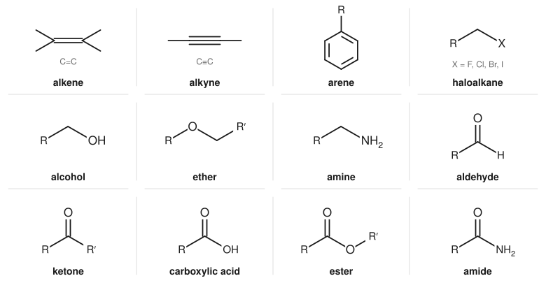
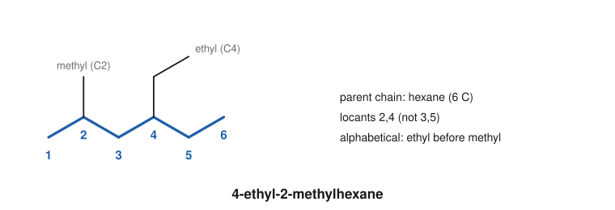
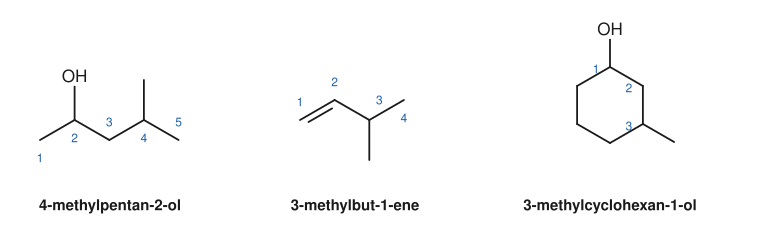

Chapter 2: Functional Groups and Nomenclature¶
Recognising families of compounds and naming them systematically
There are many millions of organic compounds, but they fall into a modest number of families. Every member of a family carries the same functional group, a small arrangement of atoms that reacts in the same way wherever it appears. Ethanol, a cholesterol molecule and a sugar all contain O–H groups attached to carbon, and all three show some of the typical reactions of alcohols. This chapter introduces the functional groups you will meet throughout the book and the IUPAC system for naming compounds, so that a name always leads to one structure and a structure to one name.
Learning outcomes
By the end of this chapter you should be able to:
- recognise the main functional groups in a structure and name the family each belongs to;
- classify carbon atoms, alcohols, haloalkanes and amines as primary, secondary or tertiary;
- name alkanes, cycloalkanes, alkenes and alkynes by the IUPAC rules;
- name compounds that carry one principal functional group, using suffixes and prefixes correctly;
- name simple benzene derivatives, including common names still in use;
- draw a structure from its systematic name;
- calculate the degree of unsaturation from a molecular formula.
2.1 Functional groups¶
A molecule can be thought of as a hydrocarbon framework, written R in general formulas, carrying one or more functional groups. The framework is fairly inert: C–C and C–H bonds are strong and nearly non-polar. The functional groups contain polar bonds, lone pairs or π bonds, and they are where reactions happen.

| Family | Functional group | General formula | Example | Name of example |
|---|---|---|---|---|
| Alkane | none (only C–C, C–H) | R–H | CH₃CH₃ | ethane |
| Alkene | C=C | R₂C=CR₂ | CH₂=CH₂ | ethene |
| Alkyne | C≡C | RC≡CR | HC≡CH | ethyne |
| Arene | benzene ring | Ar–H | C₆H₆ | benzene |
| Haloalkane | C–X (X = F, Cl, Br, I) | R–X | CH₃CH₂Br | bromoethane |
| Alcohol | C–OH | R–OH | CH₃CH₂OH | ethanol |
| Ether | C–O–C | R–O–R′ | CH₃OCH₂CH₃ | methoxyethane |
| Amine | C–N | R–NH₂, R₂NH, R₃N | CH₃NH₂ | methanamine |
| Aldehyde | –CHO | RCHO | CH₃CHO | ethanal |
| Ketone | C–CO–C | RCOR′ | CH₃COCH₃ | propanone |
| Carboxylic acid | –COOH | RCOOH | CH₃COOH | ethanoic acid |
| Ester | –COO–C | RCOOR′ | CH₃COOCH₃ | methyl ethanoate |
| Amide | –CONH₂ | RCONH₂ | CH₃CONH₂ | ethanamide |
| Acyl chloride | –COCl | RCOCl | CH₃COCl | ethanoyl chloride |
| Nitrile | –C≡N | RCN | CH₃CN | ethanenitrile |
Table 2.1. Functional groups, with one example of each.
Caution: an ester is not a ketone plus an ether
The atoms of a functional group act together. In an ester, the oxygen next to the C=O shares its lone pairs with the carbonyl group by resonance, and the ester reacts differently from both a ketone and an ether. Always identify the largest recognisable group: C=O with OH on the same carbon is a carboxylic acid, not a ketone and an alcohol.
Primary, secondary and tertiary¶
A carbon atom is classified by how many other carbon atoms it is bonded to: primary (1°) if one, secondary (2°) if two, tertiary (3°) if three and quaternary (4°) if four.
- Alcohols and haloalkanes take the class of the carbon that carries the OH or the halogen. Propan-1-ol, CH₃CH₂CH₂OH, is a primary alcohol; propan-2-ol, (CH₃)₂CHOH, is secondary; 2-methylpropan-2-ol, (CH₃)₃COH, is tertiary.
- Amines are classified differently, by how many carbon groups are attached to the nitrogen: RNH₂ is a primary amine, R₂NH secondary and R₃N tertiary. So (CH₃)₃C–NH₂ is a primary amine even though it is attached to a tertiary carbon.
These classes matter because they decide how a compound reacts. Tertiary alcohols resist oxidation (Chapter 10), and tertiary haloalkanes react by different mechanisms from primary ones (Chapter 9).
2.2 Naming alkanes¶
IUPAC (the International Union of Pure and Applied Chemistry) names are built from three parts: a prefix (substituents), a parent (the main chain or ring) and a suffix (the principal functional group). For alkanes the suffix is simply -ane.
The parent chains¶
| Carbons | Name | Carbons | Name |
|---|---|---|---|
| 1 | methane | 6 | hexane |
| 2 | ethane | 7 | heptane |
| 3 | propane | 8 | octane |
| 4 | butane | 9 | nonane |
| 5 | pentane | 10 | decane |
Table 2.2. The first ten unbranched alkanes. The stems meth-, eth-, prop-, but-, pent- and so on are used in every family.
Alkanes have the general formula CₙH₂ₙ₊₂. A group formed by removing one hydrogen from an alkane is an alkyl group: methyl (CH₃–), ethyl (CH₃CH₂–), propyl (CH₃CH₂CH₂–) and so on. Four branched alkyl groups have common names that are still accepted:
- isopropyl (propan-2-yl), (CH₃)₂CH–;
- isobutyl (2-methylpropyl), (CH₃)₂CHCH₂–;
- sec-butyl (butan-2-yl), CH₃CH₂CH(CH₃)–;
- tert-butyl (2-methylpropan-2-yl), (CH₃)₃C–, often written t-Bu.
The rules for a branched alkane¶
- Find the longest continuous chain of carbons. It is the parent. The chain need not be straight on paper; follow it round corners. If two chains are equally long, choose the one with more substituents.
- Number the chain from the end that gives the substituents the lowest locants (position numbers). Compare the sets of locants term by term and choose the set that is lower at the first point of difference: 2,3,5 beats 2,4,4.
- Name each substituent with its locant. If the same group appears more than once, use the multiplying prefixes di-, tri-, tetra- and give every locant: 2,2-dimethyl, not 2-dimethyl.
- List the substituents in alphabetical order, ignoring the multiplying prefixes (di-, tri-) and the italic prefixes sec- and tert-. So ethyl comes before dimethyl, because e precedes m.
- Write the name as one word, with commas between numbers and hyphens between numbers and letters.

Example 2.1: Naming an alkane from its condensed formula
Name (CH₃)₂CHCH₂C(CH₃)₃.
Write it out: a CH carbon carrying two CH₃ groups, then CH₂, then a carbon carrying three CH₃ groups. The longest chain runs CH₃–CH(CH₃)–CH₂–C(CH₃)₂–CH₃, five carbons: pentane. The branches are one methyl on one carbon and two methyls on another. Numbering from the right end gives 2,2,4; from the left, 2,4,4. At the first point of difference, 2 = 2, and at the second, 2 < 4, so the right-hand numbering wins.
Name: 2,2,4-trimethylpentane. (This compound is the reference fuel that defines an octane rating of 100.)
Cycloalkanes¶
A ring of carbons takes the prefix cyclo-: cyclopropane, cyclobutane, cyclopentane, cyclohexane. A ring with one substituent needs no locant (methylcyclohexane). With two or more substituents, number round the ring to give the lowest locants, starting at a substituted carbon and, when there is a choice, giving the lower number to the group that comes first in the alphabet: 1-ethyl-3-methylcyclohexane.
2.3 Alkenes and alkynes¶
The suffix for a C=C double bond is -ene and for a C≡C triple bond -yne. The locant of the multiple bond is the lower of the two carbon numbers it joins, and it is placed just before the suffix:
- CH₂=CHCH₂CH₃ is but-1-ene; CH₃CH=CHCH₃ is but-2-ene.
- HC≡CCH₂CH₃ is but-1-yne.
- CH₂=CH–CH=CH₂ is buta-1,3-diene (an "a" is added to the stem to make the name easier to say).
Number the chain from the end nearer the multiple bond, even if this gives a substituent a higher number: CH₂=CHCH(CH₃)CH₃ is 3-methylbut-1-ene, not 2-methylbut-3-ene. In rings, the carbons of the double bond are C1 and C2: 3-methylcyclohexene has the methyl on the carbon next to one end of the double bond.
Note: choosing the parent chain of an alkene
Most school and first-year textbooks choose as parent the longest chain that contains the multiple bond. The 2013 IUPAC recommendations instead choose the longest chain first and consider unsaturation only to break ties. For nearly all the molecules in this book the two methods give the same name; where you are examined, follow the convention your course uses.
Alkenes can also show cis–trans (E/Z) isomerism, which is added to the front of the name, as in (E)-but-2-ene. That is the subject of Chapter 3.
2.4 Compounds with a principal functional group¶
When a molecule contains a functional group such as an alcohol or a ketone, the name changes in three ways:
- The parent chain is the longest chain that contains the carbon carrying the principal group (or, for acids, aldehydes, amides and nitriles, the chain that includes that group's own carbon).
- The suffix shows the principal group, and the final -e of the alkane name is dropped before a vowel: propane becomes propan-1-ol, propanal, propanone.
- The chain is numbered to give the principal group the lowest locant, then multiple bonds, then the other substituents.
When a molecule has more than one functional group, only one, the principal group, is named as a suffix. The others are named as prefixes. The order of priority, from highest, is:
| Priority | Family | Suffix | Prefix (when not principal) |
|---|---|---|---|
| 1 | carboxylic acid | -oic acid | carboxy- |
| 2 | ester | -oate | alkoxycarbonyl- |
| 3 | acyl chloride | -oyl chloride | chlorocarbonyl- |
| 4 | amide | -amide | carbamoyl- |
| 5 | nitrile | -nitrile | cyano- |
| 6 | aldehyde | -al | oxo- (or formyl-) |
| 7 | ketone | -one | oxo- |
| 8 | alcohol | -ol | hydroxy- |
| 9 | amine | -amine | amino- |
| — | ether, haloalkane | (no suffix) | alkoxy-, fluoro-, chloro-, bromo-, iodo- |
Table 2.3. Priority of functional groups for naming, with their suffixes and prefixes. Alkenes and alkynes use the endings -ene and -yne together with any suffix.
Alcohols¶
Replace the -e of the alkane with -ol and give the position: ethanol, propan-2-ol, butan-2-ol. Two OH groups make a diol, and here the -e is kept: ethane-1,2-diol (the antifreeze ethylene glycol). In propane-1,2,3-triol (glycerol) each carbon carries an OH group.
Ethers¶
Simple ethers are named as alkoxyalkanes: the smaller group becomes the alkoxy prefix. CH₃OCH₂CH₃ is methoxyethane, and CH₃CH₂OCH₂CH₃ is ethoxyethane (the "ether" of old anaesthetics, also called diethyl ether).
Amines¶
Primary amines take the suffix -amine: CH₃CH₂NH₂ is ethanamine, and (CH₃)₂CHNH₂ is propan-2-amine. In secondary and tertiary amines the largest group is the parent and the others are prefixes with the locant N, to show that they are on the nitrogen: CH₃NHCH₂CH₃ is N-methylethanamine, and (CH₃)₃N is N,N-dimethylmethanamine (trimethylamine).
Aldehydes and ketones¶
The aldehyde group, –CHO, is always at the end of a chain, so its carbon is C1 and no locant is needed: CH₃CHO is ethanal, and (CH₃)₂CHCH₂CHO is 3-methylbutanal. Ketones take the suffix -one with a locant where needed: CH₃COCH₃ is propanone (acetone), CH₃COCH₂CH₃ butanone, CH₃COCH₂CH₂CH₃ pentan-2-one and CH₃CH₂COCH₂CH₃ pentan-3-one.
Carboxylic acids and their derivatives¶
The carbon of the COOH group is C1 of the chain: CH₃COOH is ethanoic acid (acetic acid), CH₃CH₂COOH propanoic acid, and (CH₃)₂CHCOOH 2-methylpropanoic acid. The derivatives are named from the acid:
- Esters, RCOOR′, are named in two words: the alkyl group R′ on oxygen first, then the acid part with -oic acid changed to -oate. CH₃COOCH₂CH₃ is ethyl ethanoate (ethyl acetate); CH₃CH₂COOCH₃ is methyl propanoate. A common slip is to reverse the parts: look for the carbon attached to the C=O; that part is the "-oate".
- Acyl chlorides change -oic acid to -oyl chloride: CH₃COCl is ethanoyl chloride.
- Amides change -oic acid to -amide: CH₃CONH₂ is ethanamide, and CH₃CONHCH₃ is N-methylethanamide.
- Nitriles add -nitrile to the alkane name, counting the nitrile carbon: CH₃CN is ethanenitrile and CH₃CH₂CN propanenitrile.
- Acid anhydrides, (RCO)₂O, replace acid with anhydride: (CH₃CO)₂O is ethanoic anhydride.

Example 2.2: A molecule with two functional groups
Name CH₃COCH₂CH(OH)CH₃.
Both a ketone and an alcohol are present. The ketone has the higher priority (Table 2.3), so it is the suffix -one and the OH becomes the prefix hydroxy-. The chain has five carbons. Numbering from the left gives the C=O locant 2; from the right, 4. So number from the left: the OH is on C4.
Name: 4-hydroxypentan-2-one.
Example 2.3: From name to structure
Draw 3-chloro-2-methylbutanoic acid.
The parent is butanoic acid, four carbons with C1 as the COOH carbon: HOOC–C2–C3–C4. Put a methyl on C2 and a chlorine on C3, then fill in hydrogens so that each carbon has four bonds: HOOC–CH(CH₃)–CHCl–CH₃.
2.5 Benzene derivatives¶
Compounds that contain a benzene ring are named as substituted benzenes: chlorobenzene, nitrobenzene, ethylbenzene. Several have common names that IUPAC accepts and that you will meet constantly:
| Structure | Common name | Systematic name |
|---|---|---|
| C₆H₅–CH₃ | toluene | methylbenzene |
| C₆H₅–OH | phenol | phenol (benzenol) |
| C₆H₅–NH₂ | aniline | aniline (benzenamine) |
| C₆H₅–COOH | benzoic acid | benzoic acid (benzenecarboxylic acid) |
| C₆H₅–CHO | benzaldehyde | benzaldehyde (benzenecarbaldehyde) |
Table 2.4. Common benzene derivatives. In each, C₆H₅– is a benzene ring that has lost one hydrogen.
With two substituents, their positions are given by numbers (1,2-, 1,3-, 1,4-) or by the older prefixes ortho- (o-, 1,2), meta- (m-, 1,3) and para- (p-, 1,4). So 1,4-dimethylbenzene is p-xylene, and 2-nitrophenol is o-nitrophenol. When the ring carries a group with a common name, that carbon is C1: 3-bromotoluene has the bromine meta to the methyl.
As a substituent, C₆H₅– is the phenyl group (often written Ph), and C₆H₅CH₂– is the benzyl group. A general aromatic group is written Ar.
2.6 Molecular formula and degree of unsaturation¶
Before you have a structure, the molecular formula already tells you something. An acyclic alkane has the formula CₙH₂ₙ₊₂. Each ring or π bond removes two hydrogens. The number of rings plus π bonds is the degree of unsaturation (also called the double-bond equivalent, DBE):
where \(C\), \(H\), \(N\) and \(X\) are the numbers of carbon, hydrogen, nitrogen and halogen atoms. Oxygen and sulfur do not appear: adding them does not change the number of hydrogens needed.
Example 2.4: Using the degree of unsaturation
Benzene, C₆H₆. DBE = (12 + 2 − 6)/2 = 4: one ring and three π bonds.
C₄H₈O. DBE = (8 + 2 − 8)/2 = 1. The molecule has one ring or one π bond. Possible structures include butanal and butanone (a C=O), but-3-en-1-ol (a C=C) and oxolane, the five-membered cyclic ether (a ring).
C₃H₆Cl₂. DBE = (6 + 2 − 6 − 2)/2 = 0. No rings and no π bonds: a dichloropropane.
Key idea
A DBE of 4 or more in a compound with six or more carbons often signals a benzene ring. This is a useful first guess when you meet an unknown compound in spectroscopy (Chapter 14).
2.7 Summary¶
Summary
- A functional group is the reactive part of a molecule; compounds with the same group form a family with similar chemistry.
- Carbons are 1°, 2°, 3° or 4° according to the number of carbons attached. Alcohols and haloalkanes take the class of the carbon carrying the group; amines are classed by the number of carbons on nitrogen.
- An IUPAC name is prefix (substituents, alphabetical) + parent (longest chain or ring) + suffix (principal group).
- Number the chain to give the lowest locants: first to the principal group, then to multiple bonds, then to substituents.
- Priority for the suffix: acid > ester > acyl chloride > amide > nitrile > aldehyde > ketone > alcohol > amine.
- Esters are named "alkyl alkanoate", with the group on oxygen first.
- Disubstituted benzenes use 1,2-/1,3-/1,4- or ortho/meta/para.
- DBE = (2C + 2 + N − H − X)/2 gives the number of rings plus π bonds.
2.8 Exercises¶
Exercise 1
Identify every functional group in the following molecule, written in condensed form: HOCH₂CH₂COOCH₂CH=CH₂.
Answer
An alcohol (the HOCH₂ group at the left), an ester (–COO– linking the two halves) and an alkene (CH=CH₂ at the right). The ester has the highest priority: the compound is prop-2-en-1-yl 3-hydroxypropanoate (allyl 3-hydroxypropanoate).
Exercise 2
Classify as primary, secondary or tertiary: (a) butan-2-ol; (b) 2-bromo-2-methylpropane; (c) N-methylethanamine; (d) 1-chlorobutane.
Answer
(a) Secondary alcohol: the OH carbon is bonded to two other carbons. (b) Tertiary haloalkane: the carbon carrying Br is bonded to three carbons. (c) Secondary amine: the nitrogen carries two carbon groups (methyl and ethyl). (d) Primary haloalkane.
Exercise 3
Name: (a) CH₃CH(CH₃)CH(CH₃)CH₂CH₃; (b) CH₃CH₂C(CH₃)₂CH₂CH(CH₂CH₃)CH₃.
Answer
(a) Longest chain: five carbons, with methyls on C2 and C3 (numbering from the left gives 2,3; from the right, 3,4). Name: 2,3-dimethylpentane.
(b) Find the longest chain carefully. Starting at the left CH₃, the chain runs CH₃CH₂–C–CH₂–CH–, and the CH carries both an ethyl group and a methyl. Continuing into the ethyl group gives a longer chain: CH₃CH₂–C(CH₃)₂–CH₂–CH(CH₃)–CH₂CH₃, seven carbons, heptane. Substituents: two methyls on one carbon and one methyl on another. Numbering from the left gives 3,3,5; from the right, 3,5,5. So 3,3,5-trimethylheptane.
Exercise 4
Draw structures for: (a) pent-2-yne; (b) 2-methylbutan-2-ol; (c) 3-methylbutanal; (d) propyl ethanoate; (e) N,N-dimethylethanamide.
Answer
(a) CH₃C≡CCH₂CH₃. (b) CH₃C(OH)(CH₃)CH₂CH₃, a tertiary alcohol. (c) (CH₃)₂CHCH₂CHO. (d) CH₃COOCH₂CH₂CH₃: the ethanoate part is CH₃CO–, the propyl group is on oxygen. (e) CH₃CON(CH₃)₂: both methyls are on the nitrogen of ethanamide.
Exercise 5
Each name below breaks a rule. Say which rule, and give the correct name: (a) 2-ethylpropane; (b) 2-methylbut-3-ene; (c) 1,5-dimethylcyclohexane.
Answer
(a) The parent is not the longest chain. CH₃–CH(CH₂CH₃)–CH₃ contains a chain of four carbons (through the ethyl group) with a methyl on C2. Correct name: 2-methylbutane.
(b) The chain is numbered from the wrong end. The structure is CH₃–CH(CH₃)–CH=CH₂; the double bond must have the lowest locant, so C1 is the CH₂= carbon. Correct name: 3-methylbut-1-ene.
(c) The locants are not the lowest possible. Starting at one methyl and going the short way round the ring, the other is at position 3. Correct name: 1,3-dimethylcyclohexane.
Exercise 6
Name: (a) the benzene ring with Cl and NO₂ on adjacent carbons; (b) 4-methylphenol written with o/m/p; (c) C₆H₅CH₂OH.
Answer
(a) 1-chloro-2-nitrobenzene (o-chloronitrobenzene); the substituents are numbered alphabetically, chloro before nitro. (b) p-methylphenol (p-cresol). (c) Phenylmethanol, usually called benzyl alcohol.
Exercise 7
Calculate the degree of unsaturation of (a) C₅H₈; (b) C₇H₇Br; (c) C₄H₉N; (d) C₈H₁₀. Suggest one possible structure for each.
Answer
(a) (10 + 2 − 8)/2 = 2: for example penta-1,3-diene, pent-1-yne or cyclopentene. (b) (14 + 2 − 7 − 1)/2 = 4: for example 4-bromotoluene (a benzene ring). (c) (8 + 2 + 1 − 9)/2 = 1: for example pyrrolidine (a ring) or but-3-en-1-amine. (d) (16 + 2 − 10)/2 = 4: for example ethylbenzene or one of the dimethylbenzenes.
2.9 Quiz¶
Check your naming skills
Exercise 1
Which family does CH₃CH₂COOCH₃ belong to?
- ketone
- ether
- ester
- carboxylic acid
Answer
ester
Exercise 2
Give the IUPAC name of CH₃CH₂CH₂CHO.
Answer
butanal
Exercise 3
Give the IUPAC name of CH₃COCH₂CH₃.
Answer
butanone / butan-2-one
Exercise 4
Which group has the highest priority as the suffix of a name?
- alcohol
- ketone
- aldehyde
- carboxylic acid
Answer
carboxylic acid
Exercise 5
(CH₃)₃COH is
- a primary alcohol
- a secondary alcohol
- a tertiary alcohol
- an ether
Answer
a tertiary alcohol
Exercise 6
What is the degree of unsaturation of C₆H₁₂?
Answer
1 / one
(12 + 2 - 12)/2 = 1: one ring (cyclohexane) or one double bond (a hexene).
Exercise 7
Match each common name to its systematic name.
| A | B |
|---|---|
| acetone | methylbenzene |
| acetic acid | ethyl ethanoate |
| toluene | propanone |
| ethyl acetate | ethanoic acid |
Answer
acetone — propanone; acetic acid — ethanoic acid; toluene — methylbenzene; ethyl acetate — ethyl ethanoate